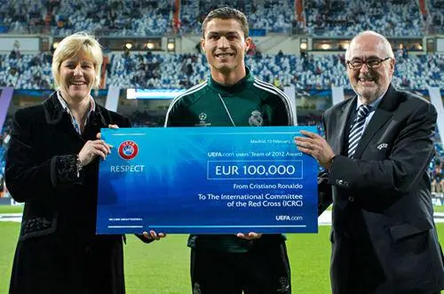
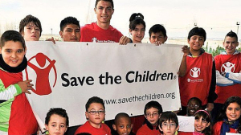
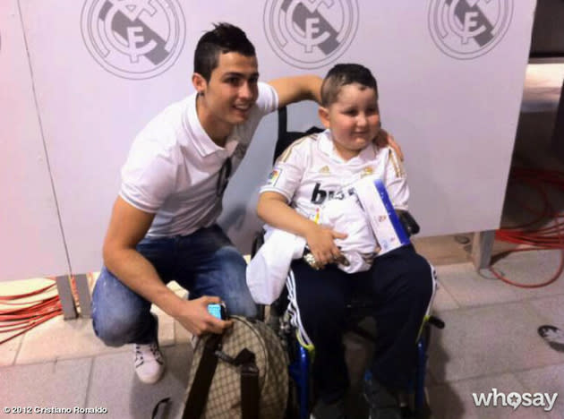
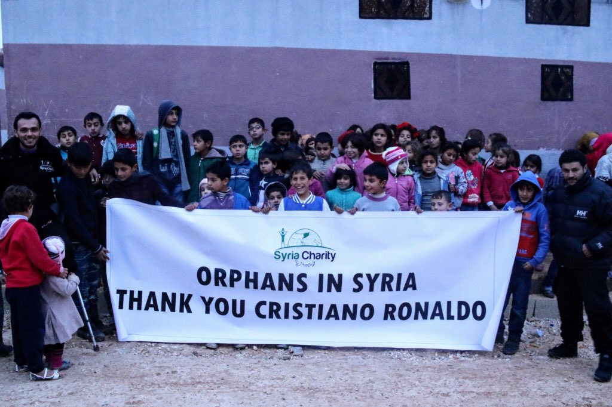
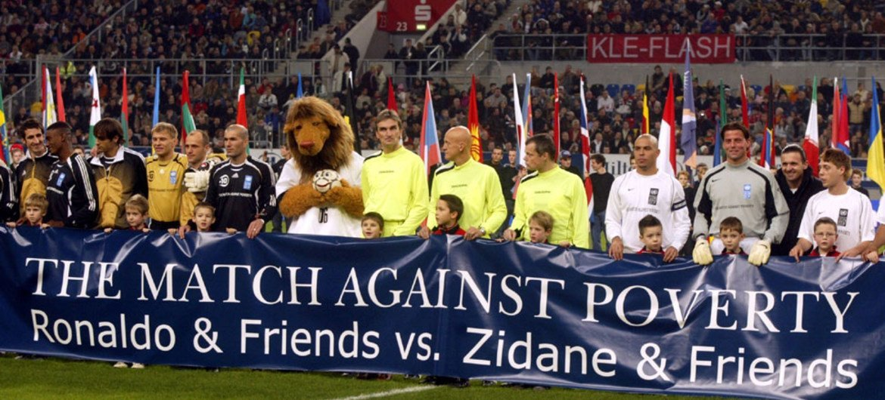
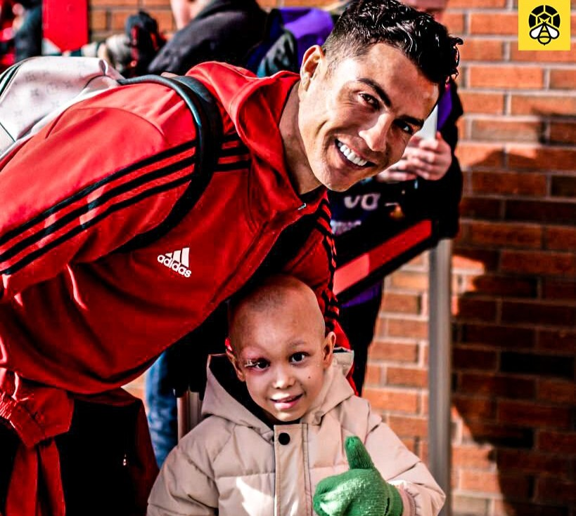

Cristiano Ronaldo, a name synonymous with excellence, determination and unparalleled talent in the world of football. Born on February 5, 1985, in Madeira, Portugal, Ronaldo's journey from a young boy with a dream to one of the greatest footballers of all time is nothing short of inspirational.
From his early days at Sporting CP, where his prodigious talent first caught the world's attention, to his record-breaking stints at Manchester United, Real Madrid, and Juventus, Ronaldo has continually set new standards in the sport. His relentless work ethic, combined with his exceptional skills, has earned him numerous accolades, including multiple Ballon d'Or awards and Champions League titles.
Ronaldo's impact transcends the pitch. His dedication to fitness, philanthropy, and his role as a global ambassador for the sport have made him a beloved figure worldwide. Whether it's his breathtaking goals, his charismatic presence, or his unwavering commitment to his craft, Cristiano Ronaldo's legacy is etched in the annals of football history.
Join us as we celebrate the remarkable career and enduring legacy of Cristiano Ronaldo, a true legend of the beautiful game.
Achievements
Cristiano's Heart: Champion of Charity
- 
- 
- 
- 
- 
- 
Cristiano Ronaldo is not only celebrated for his exceptional talent on the football field but also for his generosity and commitment to charitable causes. Over the years, Ronaldo has used his fame and fortune to make a positive impact on the lives of many. He has been a dedicated philanthropist, contributing to numerous charitable organizations and initiatives worldwide. His contributions range from substantial financial donations to personal involvement in various causes, highlighting his desire to give back to society.
One of Ronaldo's notable charitable efforts includes his support for children in need. He has frequently donated to hospitals and medical facilities, providing funds for life-saving surgeries and treatments for children facing serious health challenges. In 2014, he donated €5 million to aid the victims of the earthquake in Nepal, demonstrating his willingness to respond to global crises. Additionally, Ronaldo has been a long-time supporter of organizations like UNICEF and Save the Children, where he has not only contributed financially but also used his platform to raise awareness about critical issues affecting children around the world. In March 2020, Ronaldo and his agent Jorge Mendes donated €1 million to fund three intensive care units for patients suffering from COVID-19 in Portugal .
Ronaldo's charitable work extends beyond financial contributions. He has personally visited hospitals, spent time with sick children, and participated in charity events, bringing joy and hope to those in need. His commitment to philanthropy has earned him numerous accolades, including the title of the world's most charitable sportsperson in 2015. Ronaldo's charitable efforts reflect his belief in using his success to make a difference, proving that his legacy extends far beyond the football pitch.